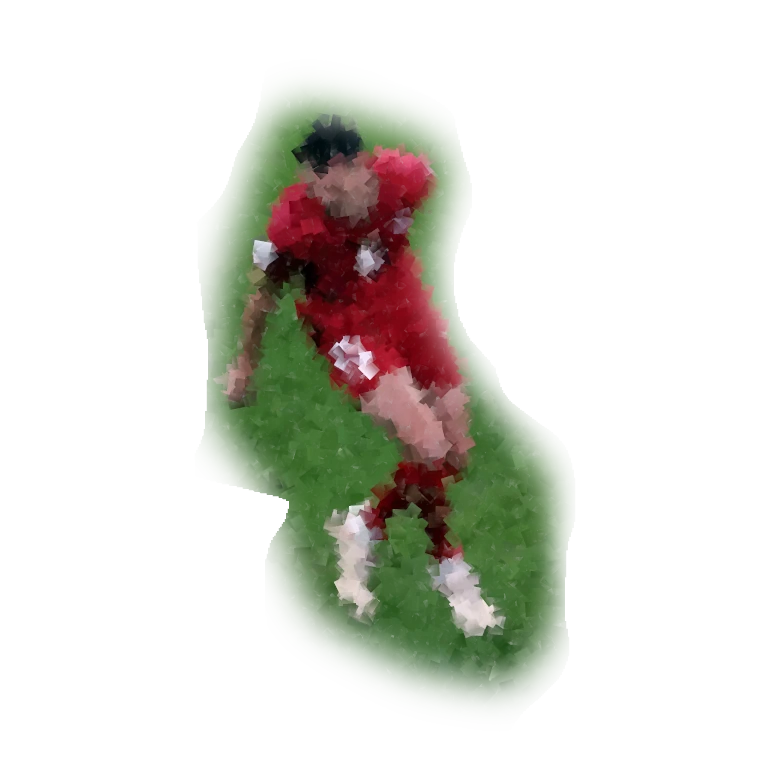
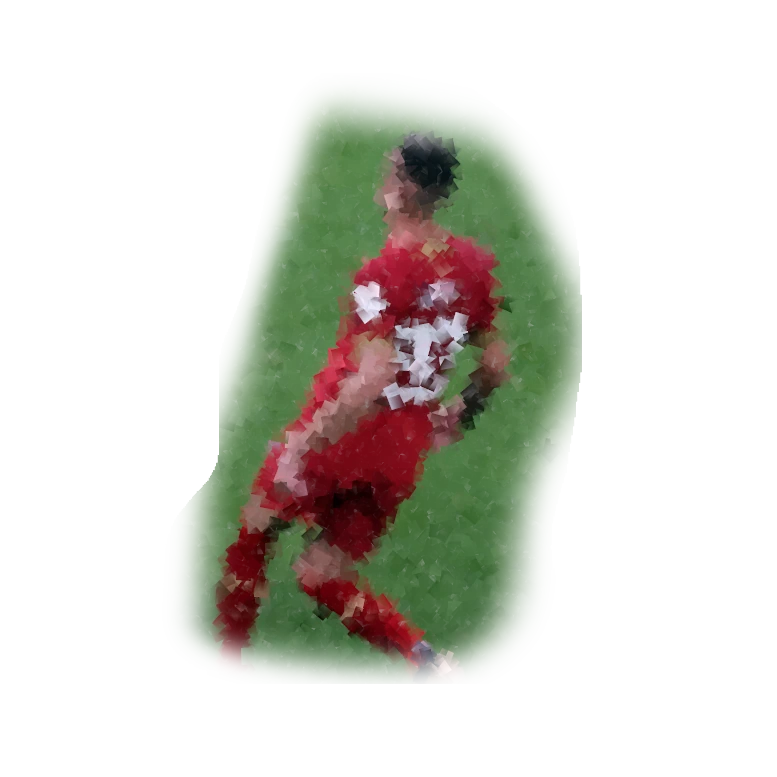

Mg.iur. Raitis Tiltiņš
Zvērināts advokāts sporta jautājumos
Tālr.: +371 2948 3439
e-pasts: raitis.tiltins@gmail.com

- Palīdzība juridiskos sporta jautājumos ar starptautisku raksturu.
- Juridiska palīdzība sportistiem/treneriem/klubiem līgumu noslēgšanā.
- Pārstāvība un interešu aizstāvība pārrunās par līgumu noslēgšanu.
- Konsultācijas par sportā iesaistīto fizisko un juridisko personu tiesībām un pienākumiem.
- Juridiska palīdzība un pārstāvība sporta strīdos.
- Procesuālo dokumentu sagatavošana sporta federāciju strīdu un apelāciju komisijām.
- Pārstāvība Sporta Arbitrāžas Tiesā Lozannā, Šveicē; konsultācijas par sporta klubu, federāciju darbības juridisko nodrošinājumu
- Konsultācijas par sporta veidu federāciju tiesībām, t.sk. tām, kas izriet no sacensībām, kas ir tās jurisdikcijā.
- Juridiskā palīdzība sporta sabiedrisko organizāciju dibināšanā un darbības nodrošināšanā.
- Juridiska palīdzība sportistu/spēlētāju arodbiedrībām to dibināšanā, darbības nodrošināšanā un sportistu/spēlētāju kolektīvo līgumu noslēgšanā.
- Darbs ar dokumentiem latviešu, krievu, angļu, franču un spāņu valodās.
Mg.iur. РАЙТИС ТИЛТИН
Адвокат по вопросам спортивного характера
Тел.: +371 2948 3439
електронная почта: raitis.tiltins@gmail.com
- Юридическая помощь в области спорта на международном уровне. Опит работы и лицензия футбольного агента ФИФА.
- Юридическая помощь спортсменам, тренерам, клубам во время переговоров и при заключении договоров. Представление и защита интересов в судах (вкл. Международный арбитраж).
- Консультации по вопросам прав и обязанностей юридических и физических лиц, вовлеченным в спортивную деятельность.
- Юридическая помощь и представительство в спортивных спорах (включая подготовку процессуальных документов в спорах спортивных федераций и апелляционных комиссий). Опыт ведения дел в комиссиях по рассмотрению споров при ФИФА.
- Представление и личное представительство в спортивном Арбитражном Суде в Лозанне (Швейцария). Опит ведения дел в спорах между футбольными агентами и футбольними играми c «договорным» характером.
- Консультации и юридическое сопровождение деятельности спортивных клубов и федераций (также по соревнованиям, входящим в их юрисдикцию).
- Юридическая помощь в организации спортивных обществ и уставное (документарное) обеспечение их деятельности.
- Юридическая помощь в создании профсоюзных обществ спортсменов и консультирование их членов (участников) при заключении коллективных договоров.